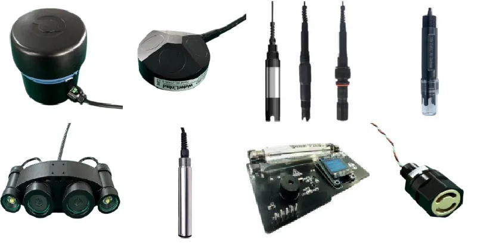

Platform engineering
平台工程
Structure, size envelope, internal layout and maintenance access are designed as one platform system.
结构、尺寸边界、内部布局与维护通道按一个平台系统设计。
Capabilities
能力
Capability is organized around platform design, sealing, control, payload integration and field support.
能力围绕平台设计、水密密封、控制、挂载集成与现场支持组织。
Review standard capability, optional modules and project expansion by layer.
按层级查看标准能力、可选模块与项目扩展。

Core Capability
核心能力
Structure, size envelope, internal layout and maintenance access are designed as one platform system.
结构、尺寸边界、内部布局与维护通道按一个平台系统设计。
Reliable underwater use depends on sealing, cable entry and maintenance logic, not isolated waterproof parts.
可靠水下使用依赖密封、线缆入口与维护逻辑，而不是孤立防水部件。
Thruster layout, depth hold and stable viewing behavior determine inspection quality.
推进器布局、定深和稳定观察行为决定巡检质量。
Monitoring, operator feedback and task adjustment must stay in one control loop.
监控、操作反馈与任务调整需要保持在同一控制闭环内。
Video, sonar, sampling, water-quality sensing and manipulator work are integrated by mission need.
视频、声呐、采样、水质传感与机械手任务按需求集成。
Platform selection, field support and project expansion are part of the delivery scope.
平台选型、现场支持与项目扩展属于整体交付范围。
Capability Layer
能力层级
Layered capability keeps standard configuration, optional modules and project support clear.
分层能力让标准配置、可选模块和项目支持保持清晰。
Standard configuration: deliverable platform capability.
标准配置：可直接交付的平台能力。
Optional modules: add-ons that do not require platform redesign.
可选模块：不需要重新设计平台的附加模块。
Project expansion: mission-driven frames, interfaces and system changes.
项目扩展：由任务驱动的结构、接口与系统调整。
R&D reserve: discussed separately, not a default delivery promise.
研发预留：单独讨论，不作为默认交付承诺。
Delivery Models
交付模式
For users building regular in-house inspection and observation capability.
适合建立常态化内部巡检与观测能力的用户。
For short-cycle missions, validation work and temporary field review.
适合短周期任务、验证工作与临时现场复核。
For customers who need platform plus field-side operator or technical coordination.
适合需要平台加现场操作或技术协调的客户。
For missions that require sensing, brackets, environment modules or custom support interfaces.
适合需要传感、支架、环境模块或定制接口的任务。
Discuss capability by layer, then map it to depth, access space and payload.
先按层级讨论能力，再映射到水深、进入空间与挂载需求。
Start with depth, scene and payload expectations to narrow the usable capability layer.
从水深、场景和挂载预期开始，缩小可用能力层级。